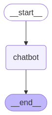

Build a basic chatbot¶
In this tutorial, you will build a basic chatbot. This chatbot is the basis for the following series of tutorials where you will progressively add more sophisticated capabilities, and be introduced to key LangGraph concepts along the way. Let's dive in! 🌟
Prerequisites¶
Before you start this tutorial, ensure you have access to a LLM that supports tool-calling features, such as OpenAI, Anthropic, or Google Gemini.
1. Install packages¶
Install the required packages:
:::python
:::
:::js
:::
Tip
Sign up for LangSmith to quickly spot issues and improve the performance of your LangGraph projects. LangSmith lets you use trace data to debug, test, and monitor your LLM apps built with LangGraph. For more information on how to get started, see LangSmith docs.
2. Create a StateGraph¶
Now you can create a basic chatbot using LangGraph. This chatbot will respond directly to user messages.
Start by creating a StateGraph. A StateGraph object defines the structure of our chatbot as a "state machine". We'll add nodes to represent the llm and functions our chatbot can call and edges to specify how the bot should transition between these functions.
:::python
from typing import Annotated
from typing_extensions import TypedDict
from langgraph.graph import StateGraph, START, END
from langgraph.graph.message import add_messages
class State(TypedDict):
# Messages have the type "list". The `add_messages` function
# in the annotation defines how this state key should be updated
# (in this case, it appends messages to the list, rather than overwriting them)
messages: Annotated[list, add_messages]
graph_builder = StateGraph(State)
:::
:::js
import { StateGraph, MessagesZodState, START } from "@langchain/langgraph";
import { z } from "zod";
const State = z.object({ messages: MessagesZodState.shape.messages });
const graph = new StateGraph(State).compile();
:::
Our graph can now handle two key tasks:
- Each
nodecan receive the currentStateas input and output an update to the state. - Updates to
messageswill be appended to the existing list rather than overwriting it, thanks to the prebuilt reducer function.
Concept
When defining a graph, the first step is to define its State. The State includes the graph's schema and reducer functions that handle state updates. In our example, State is a schema with one key: messages. The reducer function is used to append new messages to the list instead of overwriting it. Keys without a reducer annotation will overwrite previous values.
To learn more about state, reducers, and related concepts, see LangGraph reference docs.
3. Add a node¶
Next, add a "chatbot" node. Nodes represent units of work and are typically regular functions.
Let's first select a chat model:
:::python
import os
from langchain.chat_models import init_chat_model
os.environ["OPENAI_API_KEY"] = "sk-..."
llm = init_chat_model("openai:gpt-4.1")
👉 Read the OpenAI integration docs
import os
from langchain.chat_models import init_chat_model
os.environ["ANTHROPIC_API_KEY"] = "sk-..."
llm = init_chat_model("anthropic:claude-3-5-sonnet-latest")
👉 Read the Anthropic integration docs
import os
from langchain.chat_models import init_chat_model
os.environ["AZURE_OPENAI_API_KEY"] = "..."
os.environ["AZURE_OPENAI_ENDPOINT"] = "..."
os.environ["OPENAI_API_VERSION"] = "2025-03-01-preview"
llm = init_chat_model(
"azure_openai:gpt-4.1",
azure_deployment=os.environ["AZURE_OPENAI_DEPLOYMENT_NAME"],
)
👉 Read the Azure integration docs
import os
from langchain.chat_models import init_chat_model
os.environ["GOOGLE_API_KEY"] = "..."
llm = init_chat_model("google_genai:gemini-2.0-flash")
👉 Read the Google GenAI integration docs
from langchain.chat_models import init_chat_model
# Follow the steps here to configure your credentials:
# https://docs.aws.amazon.com/bedrock/latest/userguide/getting-started.html
llm = init_chat_model(
"anthropic.claude-3-5-sonnet-20240620-v1:0",
model_provider="bedrock_converse",
)
👉 Read the AWS Bedrock integration docs
:::
:::js
import { ChatOpenAI } from "@langchain/openai";
// or import { ChatAnthropic } from "@langchain/anthropic";
const llm = new ChatOpenAI({
model: "gpt-4o",
temperature: 0,
});
:::
We can now incorporate the chat model into a simple node:
:::python
def chatbot(state: State):
return {"messages": [llm.invoke(state["messages"])]}
# The first argument is the unique node name
# The second argument is the function or object that will be called whenever
# the node is used.
graph_builder.add_node("chatbot", chatbot)
:::
:::js
import { StateGraph, MessagesZodState, START } from "@langchain/langgraph";
import { z } from "zod";
const State = z.object({ messages: MessagesZodState.shape.messages });
const graph = new StateGraph(State)
.addNode("chatbot", async (state: z.infer<typeof State>) => {
return { messages: [await llm.invoke(state.messages)] };
})
.compile();
:::
Notice how the chatbot node function takes the current State as input and returns a dictionary containing an updated messages list under the key "messages". This is the basic pattern for all LangGraph node functions.
:::python
The add_messages function in our State will append the LLM's response messages to whatever messages are already in the state.
:::
:::js
The addMessages function used within MessagesZodState will append the LLM's response messages to whatever messages are already in the state.
:::
4. Add an entry point¶
Add an entry point to tell the graph where to start its work each time it is run:
:::python
:::
:::js
import { StateGraph, MessagesZodState, START } from "@langchain/langgraph";
import { z } from "zod";
const State = z.object({ messages: MessagesZodState.shape.messages });
const graph = new StateGraph(State)
.addNode("chatbot", async (state: z.infer<typeof State>) => {
return { messages: [await llm.invoke(state.messages)] };
})
.addEdge(START, "chatbot")
.compile();
:::
5. Add an exit point¶
Add an exit point to indicate where the graph should finish execution. This is helpful for more complex flows, but even in a simple graph like this, adding an end node improves clarity.
:::python
:::
:::js
import { StateGraph, MessagesZodState, START, END } from "@langchain/langgraph";
import { z } from "zod";
const State = z.object({ messages: MessagesZodState.shape.messages });
const graph = new StateGraph(State)
.addNode("chatbot", async (state: z.infer<typeof State>) => {
return { messages: [await llm.invoke(state.messages)] };
})
.addEdge(START, "chatbot")
.addEdge("chatbot", END)
.compile();
:::
This tells the graph to terminate after running the chatbot node.
6. Compile the graph¶
Before running the graph, we'll need to compile it. We can do so by calling compile()
on the graph builder. This creates a CompiledGraph we can invoke on our state.
:::python
:::
:::js
import { StateGraph, MessagesZodState, START, END } from "@langchain/langgraph";
import { z } from "zod";
const State = z.object({ messages: MessagesZodState.shape.messages });
const graph = new StateGraph(State)
.addNode("chatbot", async (state: z.infer<typeof State>) => {
return { messages: [await llm.invoke(state.messages)] };
})
.addEdge(START, "chatbot")
.addEdge("chatbot", END)
.compile();
:::
7. Visualize the graph (optional)¶
:::python
You can visualize the graph using the get_graph method and one of the "draw" methods, like draw_ascii or draw_png. The draw methods each require additional dependencies.
from IPython.display import Image, display
try:
display(Image(graph.get_graph().draw_mermaid_png()))
except Exception:
# This requires some extra dependencies and is optional
pass
:::
:::js
You can visualize the graph using the getGraph method and render the graph with the drawMermaidPng method.
import * as fs from "node:fs/promises";
const drawableGraph = await graph.getGraphAsync();
const image = await drawableGraph.drawMermaidPng();
const imageBuffer = new Uint8Array(await image.arrayBuffer());
await fs.writeFile("basic-chatbot.png", imageBuffer);
:::

8. Run the chatbot¶
Now run the chatbot!
Tip
You can exit the chat loop at any time by typing quit, exit, or q.
:::python
def stream_graph_updates(user_input: str):
for event in graph.stream({"messages": [{"role": "user", "content": user_input}]}):
for value in event.values():
print("Assistant:", value["messages"][-1].content)
while True:
try:
user_input = input("User: ")
if user_input.lower() in ["quit", "exit", "q"]:
print("Goodbye!")
break
stream_graph_updates(user_input)
except:
# fallback if input() is not available
user_input = "What do you know about LangGraph?"
print("User: " + user_input)
stream_graph_updates(user_input)
break
:::
:::js
import { HumanMessage } from "@langchain/core/messages";
async function streamGraphUpdates(userInput: string) {
const stream = await graph.stream({
messages: [new HumanMessage(userInput)],
});
import * as readline from "node:readline/promises";
import { StateGraph, MessagesZodState, START, END } from "@langchain/langgraph";
import { ChatOpenAI } from "@langchain/openai";
import { z } from "zod";
const llm = new ChatOpenAI({ model: "gpt-4o-mini" });
const State = z.object({ messages: MessagesZodState.shape.messages });
const graph = new StateGraph(State)
.addNode("chatbot", async (state: z.infer<typeof State>) => {
return { messages: [await llm.invoke(state.messages)] };
})
.addEdge(START, "chatbot")
.addEdge("chatbot", END)
.compile();
async function generateText(content: string) {
const stream = await graph.stream(
{ messages: [{ type: "human", content }] },
{ streamMode: "values" }
);
for await (const event of stream) {
for (const value of Object.values(event)) {
console.log(
"Assistant:",
value.messages[value.messages.length - 1].content
);
const lastMessage = event.messages.at(-1);
if (lastMessage?.getType() === "ai") {
console.log(`Assistant: ${lastMessage.text}`);
}
}
}
const prompt = readline.createInterface({
input: process.stdin,
output: process.stdout,
});
while (true) {
const human = await prompt.question("User: ");
if (["quit", "exit", "q"].includes(human.trim())) break;
await generateText(human || "What do you know about LangGraph?");
}
prompt.close();
:::
Assistant: LangGraph is a library designed to help build stateful multi-agent applications using language models. It provides tools for creating workflows and state machines to coordinate multiple AI agents or language model interactions. LangGraph is built on top of LangChain, leveraging its components while adding graph-based coordination capabilities. It's particularly useful for developing more complex, stateful AI applications that go beyond simple query-response interactions.
:::python
:::
Congratulations! You've built your first chatbot using LangGraph. This bot can engage in basic conversation by taking user input and generating responses using an LLM. You can inspect a LangSmith Trace for the call above.
:::python
Below is the full code for this tutorial:
from typing import Annotated
from langchain.chat_models import init_chat_model
from typing_extensions import TypedDict
from langgraph.graph import StateGraph, START, END
from langgraph.graph.message import add_messages
class State(TypedDict):
messages: Annotated[list, add_messages]
graph_builder = StateGraph(State)
llm = init_chat_model("anthropic:claude-3-5-sonnet-latest")
def chatbot(state: State):
return {"messages": [llm.invoke(state["messages"])]}
# The first argument is the unique node name
# The second argument is the function or object that will be called whenever
# the node is used.
graph_builder.add_node("chatbot", chatbot)
graph_builder.add_edge(START, "chatbot")
graph_builder.add_edge("chatbot", END)
graph = graph_builder.compile()
:::
:::js
import { StateGraph, START, END, MessagesZodState } from "@langchain/langgraph";
import { z } from "zod";
import { ChatOpenAI } from "@langchain/openai";
const llm = new ChatOpenAI({
model: "gpt-4o",
temperature: 0,
});
const State = z.object({ messages: MessagesZodState.shape.messages });
const graph = new StateGraph(State);
// The first argument is the unique node name
// The second argument is the function or object that will be called whenever
// the node is used.
.addNode("chatbot", async (state) => {
return { messages: [await llm.invoke(state.messages)] };
});
.addEdge(START, "chatbot");
.addEdge("chatbot", END)
.compile();
:::
Next steps¶
You may have noticed that the bot's knowledge is limited to what's in its training data. In the next part, we'll add a web search tool to expand the bot's knowledge and make it more capable.